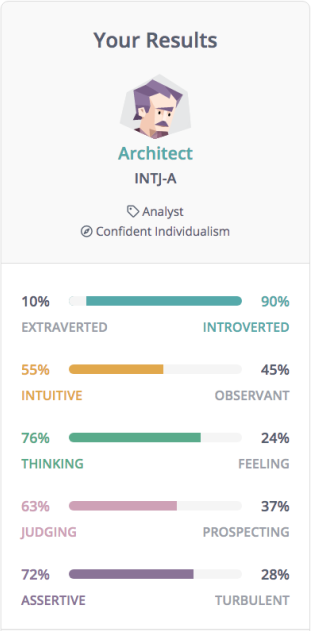
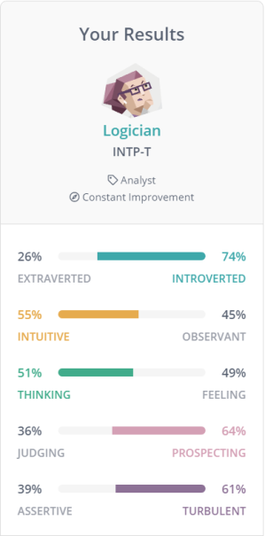
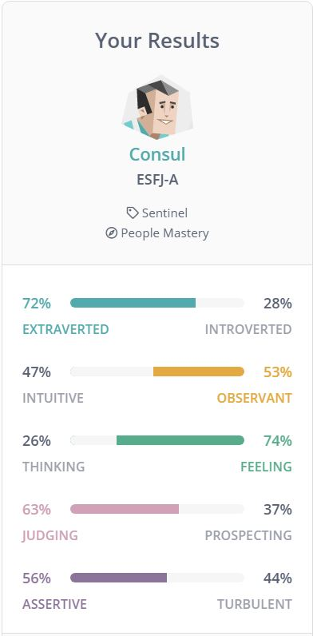
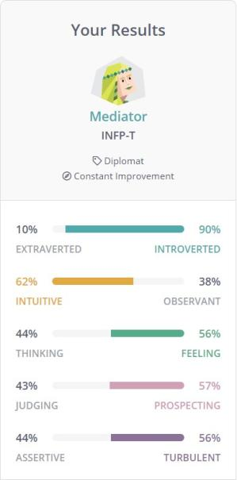
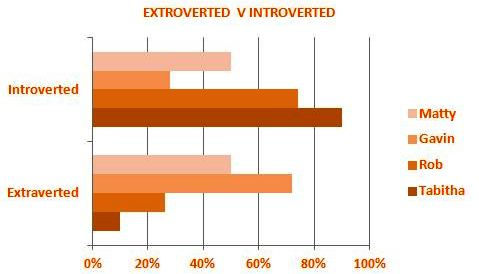
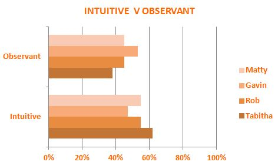
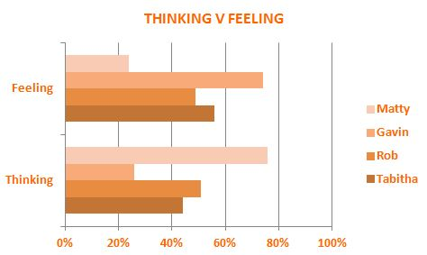
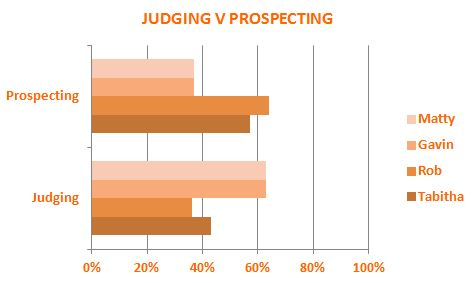
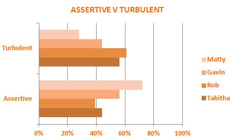

Team Profile
Matthew
ARCHITECT
INTJ-A
Imaginative
Strategic thinker
Plans for everything
Rob
LOGICIAN
INTP-T
Practical
Fact-minded
Reliability
Cannot be doubted
Gavin
CONSUL
ESFJ-A
Extraordinarily caring
Social and popular
Always eager to help
Tabitha
MEDIATOR
INFP-T
Poetic
Kind and altruistic
Always eager to help
 It is safe to say that Extraversion and Introversion are probably the oldest notions in the history of personality theories. It has long been observed that some people are expressive, outgoing and comfortable in interacting with their surroundings - while others are reserved, quiet and more comfortable alone. It is as if the former sincerely enjoy engaging with the external world and recharge by communicating with other people, and the latter prefer to rely on themselves and their own inner world instead of seeking stimulation from the outside. We focus on these differences in our first scale, which we call Mind - it determines how we see and approach the outside world, including people, objects and activities within it. While Introversion and Extraversion are often used in lieu of social aptitude, this scale involves more than just being outgoing and social - although social skills form part of it. In a broader way, the Mind scale determines the degree of interaction with the outer world; how socially one behaves is just a part of that. In a sense, this scale is a contrast of the quantity and intensity of an experience and its quality or depth. The second scale in our model is called Energy and it connects Intuitive and Observant styles. In our opinion, this dichotomy is the most important - while the other four scales determine how you interact with the world (Mind), make decisions (Nature), schedule your activities (Tactics), or react to external feedback (Identity), the chasm between Intuitive and Observant individuals is far more significant as it actually determines how you see the world and what kind of information you focus on. It may seem like your decisions are the most important, but a decision is only as good as the understanding that backs it up.
The second scale in our model is called Energy and it connects Intuitive and Observant styles. In our opinion, this dichotomy is the most important - while the other four scales determine how you interact with the world (Mind), make decisions (Nature), schedule your activities (Tactics), or react to external feedback (Identity), the chasm between Intuitive and Observant individuals is far more significant as it actually determines how you see the world and what kind of information you focus on. It may seem like your decisions are the most important, but a decision is only as good as the understanding that backs it up.With this in mind, all personality types can be divided into groups of those who favour the Intuitive (N) energy style (visionary, more interested in ideas, focusing on novelty) and those of the Observant (S) energy style (more interested in facts and observable things, focusing on the tried and tested).
The Nature scale determines how we make decisions and cope with emotions. While we all have feelings, there are significant differences in how we react to them and what role those feelings play in our lives. This then influences a number of other areas, mostly related to our interactions with other people. People with the Thinking (T) trait seek logic and rational arguments, relying on their head rather than their heart. They do their best to safeguard their emotions, shielding them from the outside world and making sure that they are not clearly visible. "Whatever happens, you must always keep a cool head" - this is the motto of Thinking types. However, this does not mean that these types are cold-blooded and indifferent. People with the Thinking trait are often just as emotional as those with the Feeling trait - but they tend to subdue and override their feelings with their rational logic.
The Tactics scale determines how we approach planning and available options. However, this affects more than just our calendars - at its core, this scale determines our attitude toward certainty and structure in our lives, both at mental and physical levels. People with the Judging (J) trait do not like to keep their options open - they would rather come up with five different contingency plans than just go ahead and deal with the challenges as they come. They prefer clarity and closure, always going with the plan rather than the flow. It is as if Judging types always keep a mental checklist, and when something is crossed off that list, it is done and not open to reassessment. This goes as much for groceries ("What will that go with?") as it does for life goals, like buying a house. Furthermore, Judging individuals tend to have a very strong work ethic, putting their duties and responsibilities above everything else. Our research also indicates that Judging types are much stricter when it comes to law and order. Of course, this does not mean that the other group are lawbreakers, but if you see someone walk for five minutes so that they could get to the other side of the street using a crosswalk, they are much more likely to be a Judging type.In contrast, Prospecting (P) individuals are much more flexible and relaxed when it comes to dealing with both expected and unexpected challenges. They are always scanning for opportunities and options, willing to jump at them at a moments notice. People with this trait are perfectly aware that life is full of possibilities, and they are reluctant to commit to something that might well prove to be an inferior option in the future.
The last scale, Identity, affects all others, showing how confident we are in our abilities and decisions. In a way, it acts as an internal sensor, reacting to the input we get from the environment - for instance, success or failure, feedback from other people, pressure caused by unexpected events and so on. Mind and Identity scales are the alpha and the omega of our model, acting like an external shell that we wear in all our interactions with the outside world - we discuss all four possible combinations of these traits in the "Strategies" section of our main theoretical article, but in this one, let's take a look at what the Identity scale looks like. Assertive (-A) individuals are self-assured, even-tempered and resistant to stress. They refuse to worry too much and do not push themselves too hard when it comes to achieving goals. Similarly, they are unlikely to spend much time thinking about their past actions or choices - according to Assertive types, what's done is done and there is little point in analysing it. Not surprisingly, people with this trait report more satisfaction with their lives and they also feel more confident in their abilities to handle challenging and unexpected situations. In contrast, individuals with Turbulent (-T) identity are self-conscious and sensitive to stress. They experience a wide range of emotions and tend to be success-driven, perfectionistic and eager to improve. They are also more willing to change jobs if they feel stuck in their current one and to spend time thinking about the direction in which their life is going.However, while the Assertive variant may seem more positive on the surface, that is not always the case - for instance, Turbulent individuals perform better in certain roles as they push themselves to achieve superior results, while Assertive ones do not care about the outcome that much. Always feeling the need to do more, to have more, and to be more, Turbulent types often forget how exhausting that can be to both themselves and the people around them - but it is entirely possible that this desire to always push themselves just a little further helps many Turbulent types to achieve what they seek to achieve.